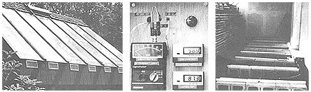

[1] The kiln's south face is covered with recycled tempered glass. [2] A Lignomat H 30 lignometer provides us with accurate moisture content readings. [3] Perforated air delivery tubes lie between the stack piers.